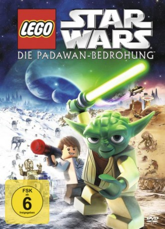

#1735 Lego Star Wars: The Padawan Menace
 
 IMDB-Wertung: 7.3 / 10
IMDB-Wertung: 7.3 / 10  Metascore: 0
Metascore: 0 
Ein Routine-Ausflug der Jedi Akademie entwickelt sich zum tollkühnen Spaßabenteuer in LEGO Star Wars: Die Padawan-Bedrohung. Meister Yoda führt gerade eine Gruppe wilder Jedi-Jünglinge durch die Senatshallen, als er eine Erschütterung im Gleichgewicht der Macht spürt. Er macht sich auf den Weg, die Republik zu retten und entdeckt dabei, dass Jüngling Ian sich heimlich an Bord seines Raumschiffs geschlichen hat... und dieser ist auf Abenteuer aus. Währenddessen übernehmen C-3PO und R2-D2 die Aufsicht über die ungestüme Gruppe junger Jedis, sind damit aber völlig überfordert. Als sich die bösen Sith mal wieder für einen Angriff in Stellung bringen, liegt es an Yoda und den beiden Droiden, ihre Schützlinge davor zu bewahren, in Stücke… äh… Steine gerissen zu werden.
Jahr: 2011
Dauer: 22 Minuten
FSK:
Land: USA Studio: Twentieth Century Fox Home EntertainmentTonspuren: DD5.1 - ,
Untertitel: Deutsch,
Auflösung: 1080p (1920x1080) Größe: 1904 MB
Genre: Sci-Fi, Fantasy, Animation/Trick, Familie
Regisseur: David Scott
Drehbuch: Michael Price, George Lucas, Ole Kirk Christiansen, Godtfred Kirk Christiansen, Jens Nygaard Knudsen
Soundtrack:
Darsteller:
 Anthony Daniels als C-3PO
Anthony Daniels als C-3PO Nika Futterman als Asajj Ventress / Jempa / Shaak Ti
Nika Futterman als Asajj Ventress / Jempa / Shaak Ti Phil LaMarr als Darth Vader / Bail Organa / Jar Jar Binks / Republic Guard
Phil LaMarr als Darth Vader / Bail Organa / Jar Jar Binks / Republic Guard Tom Kane als Yoda / Narrator / Senator Yaun / Pitchman / Admiral Ackbar
Tom Kane als Yoda / Narrator / Senator Yaun / Pitchman / Admiral Ackbar Katie Leigh als Han Solo / Mari Amithest / Ashla
Katie Leigh als Han Solo / Mari Amithest / Ashla- R. Martin Klein als Chancellor Palpatine / Darth Sidious / Republic Guard / Ki-Adi-Mundi / Liam
 Rob Paulsen als Commander Cody / Bobby / George Lucas
Rob Paulsen als Commander Cody / Bobby / George Lucas- David Scott als Obi-Wan Kenobi / Anakin Skywalker / Lobot / Malakili
- Wayne Pashley als General Grievous , uncredited
 Matthew Wood als Battle Droid , archive sound, uncredited
Matthew Wood als Battle Droid , archive sound, uncredited- Tim Gaul als Senate Announcer
- Larry Ward als Jabba the Hutt , archive sound, uncredited
Datei: X:\Kinder Collections\LEGO\Lego Star Wars The Padawan Menace (2011, FSK, 1920x1080).mkv seit 12.08.2015
Festplatte: Kinder-Filme+Trick
 Es gibt insgesamt 34 Filme in der Gruppe 'Kinder Collections\LEGO'
Es gibt insgesamt 34 Filme in der Gruppe 'Kinder Collections\LEGO'